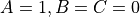
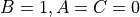

WsfOrbitalBlendedCost¶
- WsfOrbitalBlendedCost inherits WsfOrbitalOptimizationCost
WsfOrbitalBlendedCost represents an orbital targeting optimization cost function that is a polynomial that blends together the elapsed time, , and the total change in speed,  . The value of the cost function is set by three constants,
. The value of the cost function is set by three constants,  ,
,  , and
, and  as follows:
as follows:
 .
.
This cost function is more general than either least time, or least delta-V optimization, but it contains both of those as special cases.
Static Methods¶
- static WsfOrbitalBlendedCost Construct(double aA_Value, double aB_Value, double aC_Value)¶
Construct a new WsfOrbitalBlendedCost instance with the function’s coefficients set to aA_Value, aB_Value, and aC_Value.
- static WsfOrbitalBlendedCost ConstructLeastTime()¶
Construct a new WsfOrbitalBlendedCost instance with the coefficients set to reproduce least-time optimization ().
- static WsfOrbitalBlendedCost ConstructLeastDeltaV()¶
Construct a new WsfOrbitalBlendedCost instance with the coefficients set to reproduce least-delta V optimization ().
Methods¶
- double A_Value()¶
Return the value of the
coefficient for this instance.
- double B_Value()¶
Return the value of the
coefficient for this instance.
- double C_Value()¶
Return the value of the
coefficient for this instance.
- void SetA_Value(double aA_Value)¶
Set the
coefficient for this instance to the provided aA_Value.
- void SetB_Value(double aB_Value)¶
Set the
coefficient for this instance to the provided aB_Value.
- void SetC_Value(double aC_Value)¶
Set the
coefficient for this instance to the provided aC_Value.